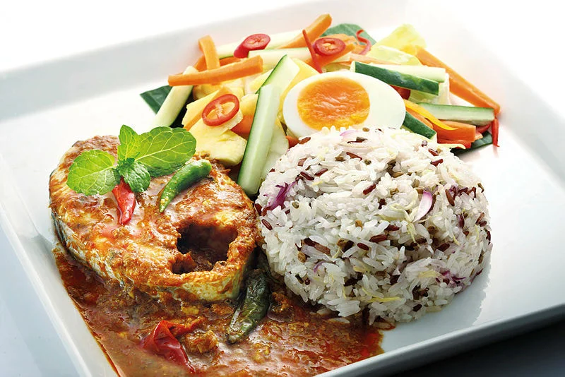
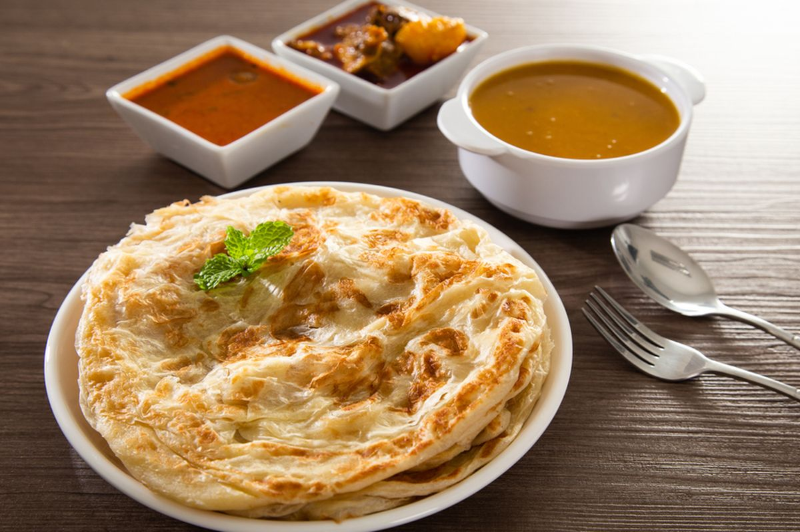
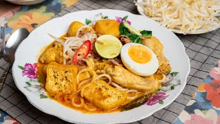
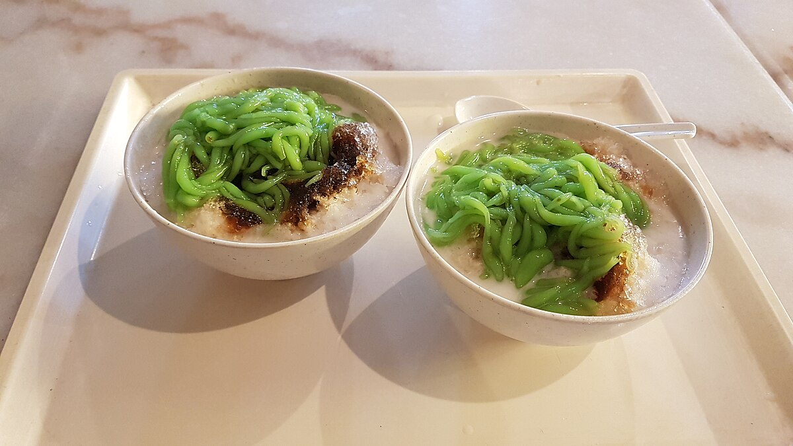
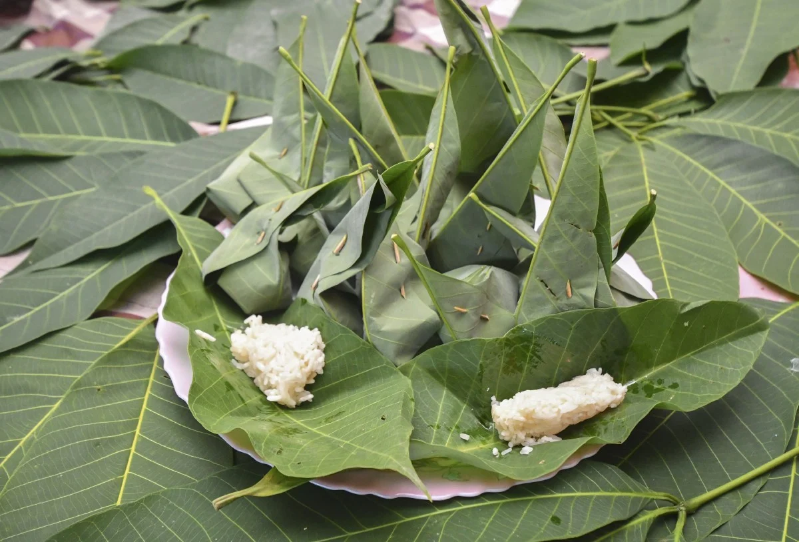
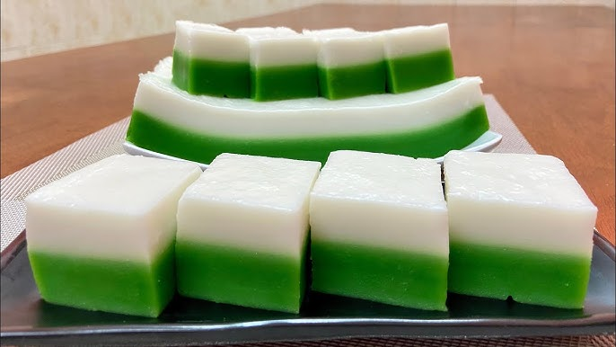

Dish |
Nasi Lemak |
 |
| Fragrant rice cooked in coconut milk and pandan leaf, served with sambal, anchovies, peanuts, and cucumber.
A quintessential Malaysian breakfast, often enjoyed throughout the day. In KL and Selangor, you'll find variations with fried chicken, beef rendang, or seafood.
|
Nasi Kerabu |
 |
| Blue-colored rice served with various herbs, vegetables, fish, and crackers.
A vibrant dish from Kelantan, but also found in some restaurants in KL. The blue color comes from natural flower extracts.
|
Nasi Dagang |
 |
| Rice steamed in coconut milk, served with fish curry.
A specialty from Terengganu, but also available in some restaurants in KL. The fish curry is rich and flavorful.
|
Side |
Roti Canai |
 |
| Flaky flatbread served with dhal or curry.
A popular breakfast and teatime snack, especially in "mamak" (Indian-Muslim) restaurants. Best enjoyed hot off the griddle with a side of spicy dhal.
|
Laksa |
 |
| Spicy noodle soup with fish, prawns, and coconut milk broth.
There are various types of laksa. In KL, you'll find both curry laksa and asam laksa. Curry laksa is creamy and coconut-based, while asam laksa is sour and fish-based.
|
Mee Kari |
 |
| Noodle soup with a spicy coconut milk broth, served with prawns, chicken, and tofu.
A hearty and satisfying dish, perfect for a rainy day. You'll find it at hawker centers and restaurants.
|
Dessert |
Cendol |
 |
| Iced dessert with coconut milk, green rice flour jelly, and palm sugar.
A refreshing dessert, perfect for the hot Malaysian weather. Often found at roadside stalls and hawker centers.
|
Tapai |
 |
| Fermented glutinous rice, sweet and slightly alcoholic.
A traditional dessert, often wrapped in banana leaves. It's an acquired taste, but worth trying for its unique flavor.
|
Tepung Talam |
 |
| Steamed two-layer dessert with a sweet pandan layer and a salty coconut layer.
A popular kuih (traditional cake) often found at markets and stalls. It's a delightful mix of sweet and savory.
|
Ais Kacang(ABC) |
 |
| Shaved ice dessert with sweet corn, beans, jelly, and syrup.
A refreshing treat, especially on a hot day. You'll find it at hawker centers and roadside stalls.
|